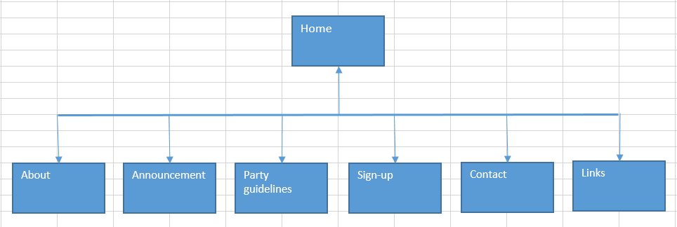

Name: Wu zhihong
Login: jc345931
The goal of this website is to advertise a small family-run local business in Hulkstown which call "cossieplay", to let people konw more about cosplay. The most important thing is to attract more high school students and young adults join in their cosplay party and buy their products.
There are two ways to evaluate whether this website is successful or not. The first way is to calculate the total sales of each month. The second way is to calculate the number of people who join in the party. If the number is increasing in any one of the ways, this website is successful.
The target audience is high shool students and young adults. Young people are curious, they love something strange and eccentric. Therefore, a cosplay website will attrack them to stay and browse. In the home page of this website is a picture about people joining the cosplay party, this picture will give them more understanding of a cosplay party, and there are more information under the picture, those can let youngers feel interesting and attrack them to join in. They can browse more information after the home page.
